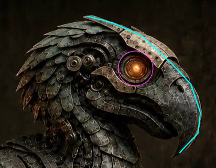

Whole envelope improves; profile soft-target residual and lateral shift at bound remain. Cyan source lines are approximate manual outer landmarks, not segmented ground truth. July head only.

Sept22 full-bird head crop, sourceJuly head identity, source